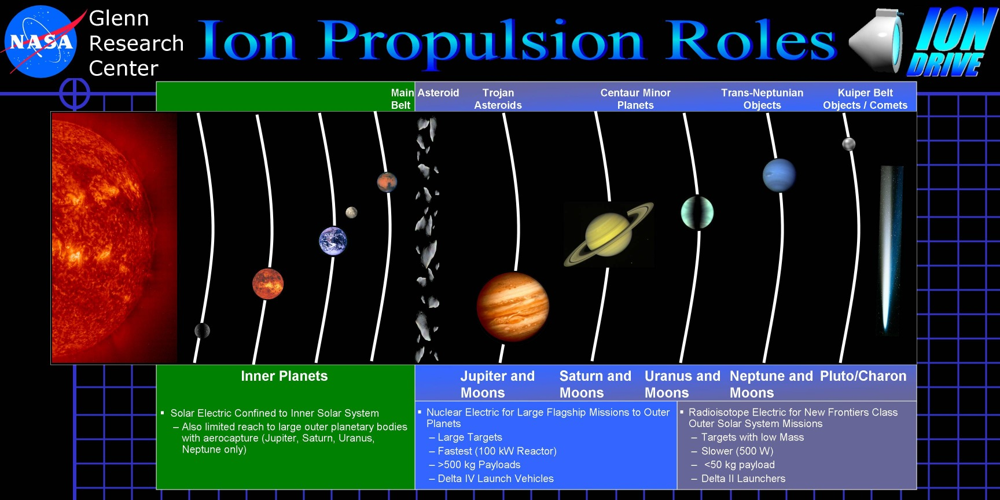

推进技术¶
火箭简史¶
Nikolai Kibalchich 是一个传奇的人物，二十四岁的他因为把一本禁书借给别人，被判监禁两个月，然而在这个正式审判之前，他已经在监狱里面待了三年了。从监狱出来之后，他加入了当时的民意党，成为了他们的首席“爆破专家”。然而他的人生依然是继续的悲剧，没过几年就因刺杀亚历山大二世被抓入监狱，等待绞刑。然而临刑前，他在监狱写下了使用炸药作为动力的火箭引擎推进载人飞船的研究，希望得到其它科学家的回复，因此这份研究被送到了警察局。一个月之后，在这个 1881 年美丽的春天，Nikolai 被执行绞刑。Nikolai 一直没有得到其它科学家的回复，因为当时的警察局将他的这份伟大的发明搁置一旁，直到 1917 年被 Nikolai Rynin 重新发现这份研究，并且发表了出来。
月球上有一个以 Nikolai Kibalchich 名字命名的陨石坑，位于 3.0° N 146.5° W 也就是月球背面。来自 Google Earth Pro.
Nikolai Kibalchich 死后十年，德国工程师 Hermann Ganswindt 重新发现了类似的点子。之后，也就是二十世纪初期，包括 Tsiolkovsky 和 Goddard 在内的多人建立起了火箭理论。
Goddard 和他的液体火箭实验。来自 维基百科：File:Goddard and Rocket.jpg。
行星际运输轨道¶
地火运输¶
霍曼轨道¶
霍曼转移轨道因为历史悠久，具有非常好的可靠性。然而由于运输周期较长，所以常常被成为太空海运，或者太空拖车。
{kind=link}
霍曼转移轨道
在第一个火星前哨站建立之后，UPI 的大宗货物运输是通过霍曼转移轨道进行的。由于当时在这种运输方式上的经验比较丰富，此方式被使用了多年。后来被称为“太空海运”，由于运输周期长，被人戏称为“太空拖车”。
运输器采用了大量的太空集装箱式的货仓设计，扩展方便。在 ULA 加入到火星殖民地建设中来之后，这部分逐渐完全转交给 ULA 负责。
星际弹道捕获¶
弹道捕获的最早使用可以追溯到二十世纪人类发射的月球探测器 Hiten 。通过这种方式到达环绕火星的轨道所需要的能量要比霍曼转移轨道的能量要低，然而也需要更长的时间。这种运输方式更加节省燃料，也就意味着同样的燃料可以运送更多的货物。在传统化学火箭时代，这种轨道是一种比霍曼转移轨道还要价格低廉，因此也长期存在。甚至在热核火箭和离子推进技术兴起的时代，这种运输轨道也被许多不知名的小机构继续使用。
轨道在前期与霍曼转移类似，然而通过霍曼转移并非直接到达火星，而是到达火星轨道之内的某处，然后采用一个弹道捕获的轨道慢慢地与火星会和。
弹道捕获的星际转移轨道。从地球出发，到达火星轨道之内的某处 \(x_c\) 。参考 arXiv:1410.8856 。
快速合点运输¶
飞船采用快速的合点轨道前往目的地。虽然这需要更多的燃料，但是对于一些需要快速运输而且贵重的货物来说，这是最佳选择。UPI 还在很多小行星设立中转站，负责从地球出发的飞船的安全和紧急补给。
星际弹射系统¶
小型物资的交换，需要比两年更小的周期。IIA 的研发部不得不考虑更加快捷的物质传输方式——星际弹射系统。
星际弹射系统的前身就是在 21 世纪 60 年代的电磁投射系统。在火星殖民开始前的准备中，IIA 已经将一个电磁投射器发射到了火星。在大规模的地面建设开始之后，工程船将绕火星轨道上的电磁投射器进行了改造和更新，建立了更加复杂精确的弹射系统，用来接收地球轨道或者小行星矿场直接弹射过来的物资。经过严密的计算之后，地球轨道上或者位于小行星矿场的的弹射系统会将物资弹出，经由一条较快的路径到达火星，轨道修正由货仓上的离子引擎完成。物资到达火星轨道后，位于火星轨道的弹射系统将为物资减速，进一步空降到地面殖民地。为了全程追踪，每个包裹都会装有唯一标识的无线电信号源。
这类弹射系统后来演化为轨道加速器，也就是火星大规模移民的主要交通方式，被称为 星际快车 。
持续推进轨道¶
在太阳帆、离子推进和热核火箭兴起之后，地球-火星之间有了快速安全的航线。得益于新的推进技术的发展，这种轨道采用了更加直接的方案飞往目标行星。
地球和火星之间的快速航线。整个过程中发动机几乎全程开机，直接飞往目标行星。参考： VASIMR Human Mission to Mars 。
横跨轨道加速器（TOA）¶
在太阳系内行星之间的运输是通过横跨轨道终端来实现的。横跨轨道终端是一个加速器，可以将飞船在短时间内加速到行星际飞行的速度，这样节省了飞船自身的燃料，对于小型飞船来说，这是非常有效的方式。
例如，星际移民局总部在火星，常常需要快速的在地球和火星之间飞行，对于小型飞船来说，这是非常困难的，所以星际移民局在火星和地球分别建立了横向轨道跳跃装置。
小型飞船通过在火星的终端进行加速，可以达到非常高的速度，这样就可以迅速离开火星飞往地球，经过路途中的几个路径修正和最终靠近地球的减速终端，小型飞船就可以在不消耗自身燃料的情况下快速飞往地球。
行星际引擎¶
在星际移民早期，主要使用的是化学火箭。后来由于核动力和离子火箭的大量使用，移民的成本大大降低，自由移民也开始大量出现。
离子火箭¶
离子火箭是利用高压电场将电离后的物质加速并高速喷出来产生推动力的。

离子推进
带电的离子在高压电场作用下，可以达到非常高是速度，从而将火箭推向相反的方向。由于离子火箭可以稳定的持续加速，所以适合远距离航行。
离子推进历史
离子推进技术最早是由 Konstantin E. Tsiolkovsky 提出的。后来经过多人的发展（Robert H. Goddard, Ernst Stuhlinger, et al），成为一种实用的技术。
离子推进是利用被电磁场加速的带电粒子来产生推力的，而离子的最终速度对离子所带的电荷非常敏感。理论上来讲，电推动的情况下，同样的电压下，两倍的电荷几乎可以产生两倍的最终速度，也就是两倍的最终推力。
把燃料电离，其中的带电的粒子在电场作用下会被加速，如果电场足够强，带电粒子可以很快被加速到一个很高的速度，这个速度可以远远高于化学反应所产生的燃料喷射速度，这样一来燃料的利用率大大提高，也就意味着不用携带很的燃料了。这就是离子电推的原理。
然而离子电推在二十一世纪初期一直没有解决推力太小的问题。当时的发动机包括测试在内，只有几十豪牛顿到几十牛顿的推力。（一牛顿大约是一个小苹果在地表所受到的重力。）
除了离子电推，二十一世纪初期很有前景的另一种电磁推进，除了用到了电场，还需要磁场和电磁波。
扩展阅读
早在二十世纪初，NASA 曾经对整个离子推进做过评估
NASA 对推进技术的评估。http://www.grc.nasa.gov/WWW/ion/future/images/futureapps.jpg
{kind=link}
核脉冲火箭¶
爆炸用来提供推力，基本的原理与化学火箭并无不同，只不过由原来的连续的推力变成了断断续续的推力。
核脉冲火箭历史
在人类历史上，最早的完整核动力火箭设计是始于 1958 年的猎户座计划。 Ted Taylor 和 Freeman Dyson 两个人带领的这个计划不仅仅在理论上设计了完整的核动力推进火箭，而且用普通炸弹进行了实际的实验。
Carl Sagan 在一次 C-SPAN 的一次 Congressional Clearinghouse on the Future 上提到，虽然有一些副作用，但是这或许是一个很好的处理掉核弹的方法。猎户座计划曾经给很多人带来了很多希望，人们希望可以去遥远的太阳系的尽头，将武器变为人类探索太空的工具。然而这样一个计划还没有实施就胎死腹中。
早在曼哈顿计划晚期，Ulam 就开始讨论除了武器之外的核能的应用。1958 年 Stanislaw Ulam 和 Frederick Reines 在一篇报告中讨论了一些可能的核动力火箭技术。
Longmier 和 Ulam 的核推进示意图。来自 Longmier, C.; F. Reines; S. Ulam (August 1958). ”Some Schemes for Nuclear Propulsion“。
Reines 的核裂变发动机示意图。来自 Longmier, C.; F. Reines; S. Ulam (August 1958). ”Some Schemes for Nuclear Propulsion“。
在这篇报告中，共有两个不同类型的方案被提出来了。
Longmier 和 Ulam 讨论了利用核弹爆炸脉冲作为推力。 Reines 讨论了混合 U235 和重水混合作为推进的方案。裂变燃料和重水混合在一起，核裂变加热重水变成气体，然后产生推力。在报告中 Reines 同时讨论了这个方案中多级加热可以提高燃料效率。 Project Orion 就是一个研究核弹脉冲作为火箭推力的一个完整方案。Project Orion 不仅进行了理论的研究，而且用炸药实际做过实验。
之后人们设计了很多核裂变和核聚变火箭，这些核动力火箭一直激励着人类，飞向星空。
猎户座计划
猎户座飞船的艺术家想象图。图片为公有领域作品。来自 维基百科 。
{kind=link}
Project Orion 是第一个完整的核动力推进设计，然而由于后来的禁止核试验条约以及外层空间条约禁止部分核试验并且禁止核武器进入太空，所以 Project Orion 最后还是死在了初步实验阶段。
这里的推进的基本原理，与现在普通的化学火箭没有什么差异，都是将工质高速喷出，产生推力，工质喷出的速度越高，发动机的效率就越高，从而就越节省燃料。火箭节省燃料这个问题上带来的效应是非常巨大的，因为火箭主要的质量是由燃料构成的，也就是说，我们的燃料有很大一部分浪费在运送燃料上，我们只需要将燃料的利用效率提高一点点，火箭的质量可以大大减轻。
这类火箭的效率主要取决于工质喷出的速度，对于化学火箭来说，工质喷出是依赖于气体的合成和受热膨胀的，也就是说，化学火箭的效率的瓶颈在于气体的温度。从理论上来讲，工质的温度有两个上限，一个是化学反应的放热效率，另一个是用来制造发动机的材料，温度太高火箭发动机材料会熔化。
Project Orion 是一个利用核弹爆炸来产生推力的方案，显然我们没有办法做一个燃烧仓把核弹限制在里面爆炸，解决方案就是使用外部爆炸。
Project Orion 的推进示意图。核弹在飞船后方引爆。来自 Project Rho。
然而核爆炸产生的推力是非常大的，如果直接让这个力施加在载人舱段，加速度太大，人是没法承受的。因此 Freeman Dyson 等人一起设计了一些缓冲装置，除了非常最底层紧挨着推进板（pusher plate）的第一级缓冲，还有位于推进板和核弹释放装置之间的主要缓冲装置。
Project Orion 其中一个设计的草图。来自 ”Nuclear Pulse Space Vehicle Study“。
这里引爆的核弹并不是一个单纯的核弹，而是经过特殊设计的推进单元。每个单元上方有钨制作的推进剂，核弹爆炸的时候，这些钨制作的推进剂会被气化，然后碰撞推进板（pusher plate），从而产生推力。
Project Orion 的推进单元。一开始的设计中，这些特殊设计的小型核弹有 0.6 米高，重量是 79 千克。来自 Project Rho。
储存核弹的弹夹是咨询了可口可乐公司的。因为当时大家想到把核弹有控制地释放出来，跟可口可乐的自动贩售机很相似。核弹通过核弹输送系统从弹夹送到释放区域。
Project Orion 的核弹弹夹。来自 Project Rho。
核弹从尖嘴部分释放出来，一路经过厚厚的一级震波吸收板(shock absorption)和推进板（pusher plate），从吸收板和推进板的孔中经过，到达火箭后方，然后引爆，核爆炸为火箭提供推力。
Project Orion 发动机原理。核弹从中间的管道被释放出来，经过下面吸收板和推进板中间的孔，到达飞船的后方，然后引爆。来自 Project Rho。
Project Orion 中，飞船的设计除了上面的推进系统，还包括了载人舱段。由于这种推进方式的效率很高，是普通化学火箭的十几到几十倍，这样我们甚至可以把十几米直径的载人飞船轻松送到火星。携带同样质量的燃料的情况下，由于火箭的速度是跟发动机的效率是正比的，这就以为着，我们同样质量的燃料，可以帮助我们获得普通化学火箭的十几到几十倍的速度。
Project Daedalus
Project Daedalus 与帝国大厦的比较。来自 http://www.bisbos.com .
Project Daedalus 设计的初衷是想证明在当时的已知科技的框架下，恒星际旅行是可行的。这个设计在 1973 到 1978 年之间进行，由 British Interplanetary Society 的 11 名科学家设计，最终结果是一个重达 54000 吨的庞然大物，要比帝国大厦要大的多，而且其中有 50000 吨是燃料。
设计的发动机是基于核聚变的，最初的设计是使用核脉冲发动机，与 Project Orion 相似，不过他们采用了核聚变作为能源，也就是通过点燃氢弹来推进。后来 F. Weinberg 提出的使用高能质子束引发的核聚变，以及后来的激光核聚变等等。总之，Project Daedalus 使用了当时所能了解到的最高效的能源：核聚变。
使用高能质子束来引发核聚变。高能质子束的能量在 GeV 量级，轰击在中间的氘棒上（图中 D）。来自 arXiv:0812.0397。
飞船要求在地球附近轨道上建成，发动机可以将飞船速度从提升到光速的 16%。这样在人类的寿命之内，飞船可以到达其它的恒星系。
Project Medusa
Project Medusa 的原理。飞船向前释放一颗核弹，核弹在靠近船帆的地方爆炸，能量用来推动飞船前进。来自 File:MedusaNuclearPropulsionOperatingSequenceDrawing.png。
{kind=link}
Project Medusa 是二十世纪九十年代由 Johndale C. Solem 设计的一个核动力飞船。
Johndale Solem 在 LANL 的一篇报告中7解释了 Project Orion 的一些问题：
- Project Orion 的推进板（飞船尾部用来接受爆炸能量的板）无法设计成很大面积，因为这是向前推进，如果面积很大，对材料结构要求很大。
- Project Orion 的减震系统很复杂，而且只要还需要使用核动力推进，这套复杂沉重的减震系统就需要一直的飞船上，这是对核弹能量的一种浪费。
- 由于飞船的载人舱和核弹爆炸距离不是很远，核弹的辐射对于宇航员的健康的影响比较大。
为了解决这些问题，Johndale Solem 设计了 Project Medusa，使用飞船前方巨大的船帆来代替原来飞船尾部的推进板。这样巨大的船帆来收集爆炸产生的能量效率要远远高于原来比较小的推进板，而且船帆拉住飞船船体的设计，对材料的要求要低一些，加上拉住船帆的长索飞船长，核弹爆炸距离载人舱要比 Project Orion 的设计里面远得多，这样飞船要比 Project Orion 的效率更高，也更安全。

Project Medusa 飞行的时候就像海中一个巨大的乌贼一样。完整视频在我们的 Bilibili:av3157254。来自 The Medusa - An advanced nuclear pulse spacecraft。
Johndale Solem 对 Isp 估算的结果，如果使用 25 吨当量的炸弹，\(Isp∼4.25×10^3\mathrm{s}\)。这个量级与 Project Orion 相差不大，然而整体设计却比 Project Orion 要简单地多。至于船帆的材料，Johndale Solem 建议使用高强度聚乙烯，因为密度小强度大。这样我们可以做 500 米直径的船帆7，这样船帆的质量在 10 吨的量级，作为对照，阿波罗登月舱的质量大约是 15 吨。
参考文献：
- Longmier, C.; F. Reines; S. Ulam (August 1958). “Some Schemes for Nuclear Propulsion”. LANL report LAMS-2186.
- Johndale Solem 在 1993 年发表了一篇关于 Medusa 的文章：Solem, J. C., “Medusa: Nuclear Explosive Propulsion for Interplanetary Travel”, Journal of the British Interplanetary Society, Vol. 46, pp. 21-26,1993.
- Johndale Solem, “Some New Ideas for Nuclear Explosive Spacecraft Propulsion”
热核火箭¶
利用核反应堆将气体加热到几千甚至几万度的高温，使气体从发动机高速喷出，这样也可以大大提高火箭燃料的利用率。
热核火箭历史
火箭飞行器用核引擎（NERVA，美国原子能委员会和 NASA 的项目）就是一个利用核裂变来产生高温，加热氢气，从而产生动力。